Cambodia Index: - 1 - 2 - 3 - 4 - 5 - 6 - 7 - 8 - 9 - 10 - 11 - 12
Eric and I were both excited and nervous about the trip. There were so many concerns like possible side-effects from the 5 pre-trip vaccines; the possibility of getting malaria, typhoid, or parasites; wondering if we would hate the food and starve for two weeks; etc. I can tell you that once the trip got underway, we never had another thought about those things (except maybe the parasites!)
Our 'normal' lives are happy, fulfilling, and fun. However, the two weeks of that mission trip was two weeks of living life at another level. Every day was full of rich and meaningful experiences and the chance to make a lasting impact on others. It was truly awesome.
Wish you could have gone with us? Well, follow me through these
12 pages and you'll feel almost like you did!
NOTE: Many of these pictures are courtesy of friends Autumn Ellis, Gretchen Thompson, Pastor David, and others. Thank you for sharing!
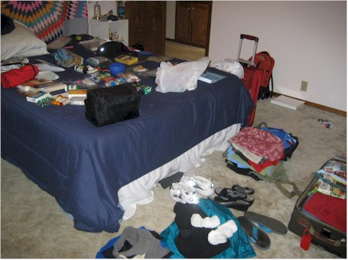

3pm. Here we are in line to check in for our first flight to Dallas.

Terry, Jessica, Andrew, Allison, Shelby, and Joe - getting ready

anxious to get this show on the road

first sign of trouble

This is the American Airlines lady informing us that AA had
cancelled the first of our 4 flights of the day. This had the effect
of making us miss the other 3 flights and caused a $5,000 penalty
with China Air that the church had to pay. Unhappy news!
We had all agreed before the trip that we were in control of
our
attitudes and that we would maintain a good one throughout the trip.
We just didn't know we'd have to start working at it so soon!!!

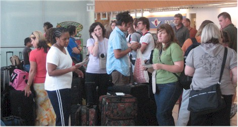
We were in this part of the OKC airport for 5 hours, then we all went back home.
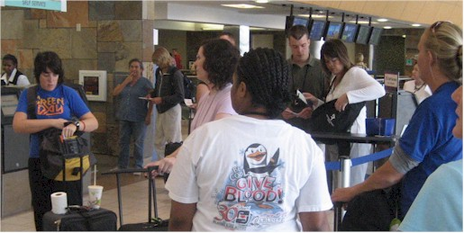

At this point we were told we could only go as far as Tai Pei and would be stuck there
4 days. We pressed on, believing that a way would be made for us.
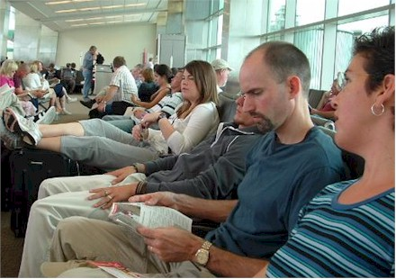
Here we are, shortly before leaving on our first flight.
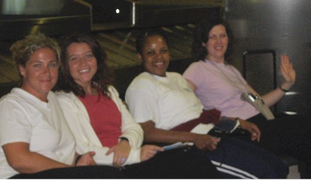

Two shots of these lovely ladies, happy to have made
it as far as L.A.
Autumn, Bethany, Catina, and Bobby

for some unknown reason, but we're happy!
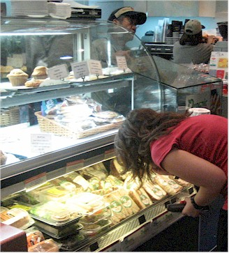
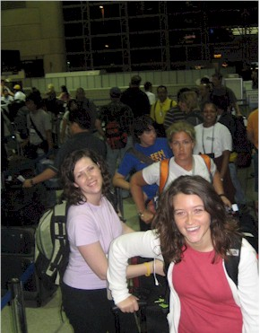
in the food court at LAX. I hope she doesn't plan to
look this closely at our food in Cambodia!
Central time, by now it was 11pm Central. Our next
flight was to leave at 3:30am Central time - good times!

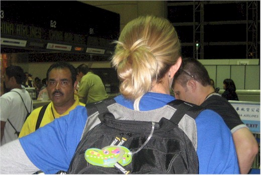
and a heart of gold.


a flight that we had no prior reservations for. China Air said they transferred
us to Eva air, but they couldn't find our record when we first arrived. Scary!
recliners in the back. We needed this in LAX on the way home!
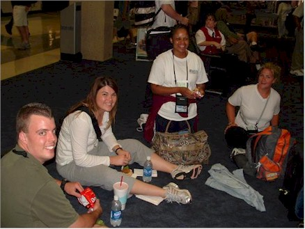

Preparing for the last flight from Taipei to Cambodia

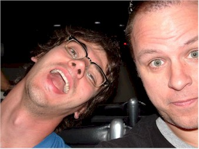
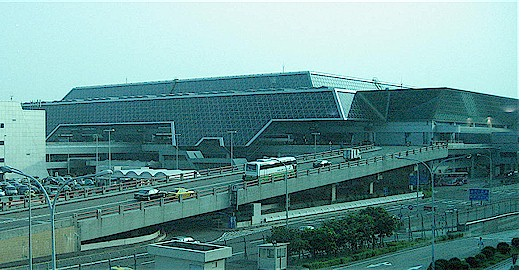
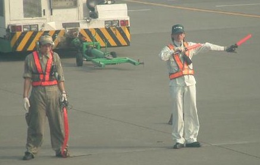

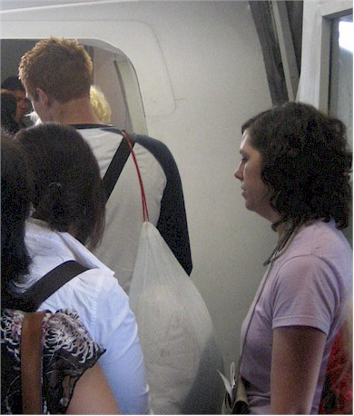
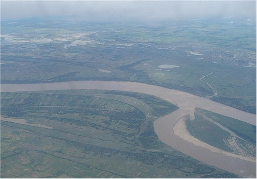


the airport in the heat for over an hour awaiting our ride to the hotel.

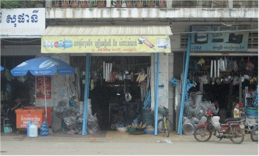
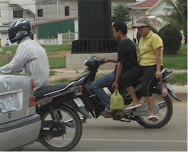

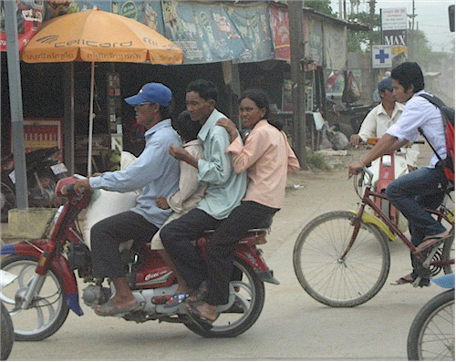
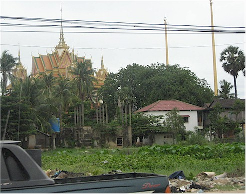
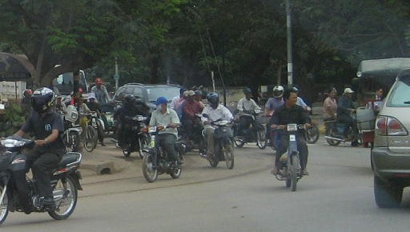

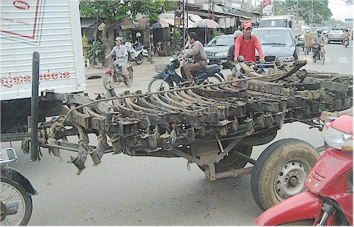


at some point during the trip.


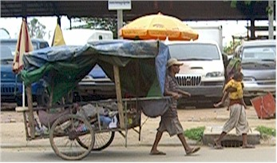
hitting the road.
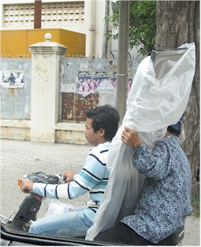
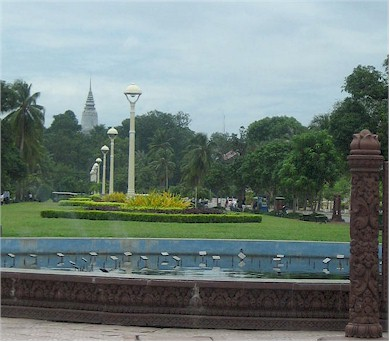
to imagine this scene if there was a wreck.
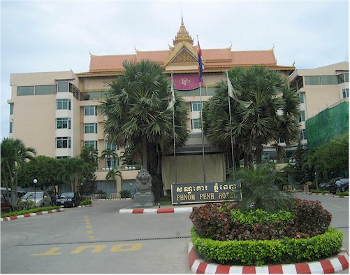
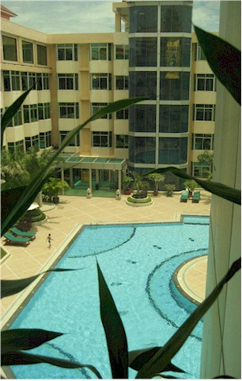
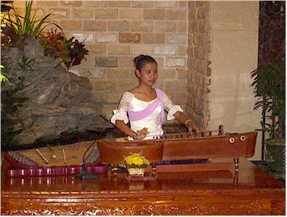
It was almost noon when we arrived and our
rooms were not ready so we headed to a
very welcome lunch.

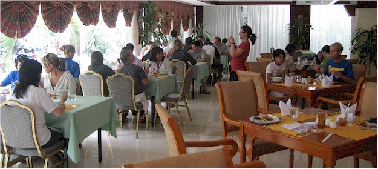
of our Phnom Penh meals here.

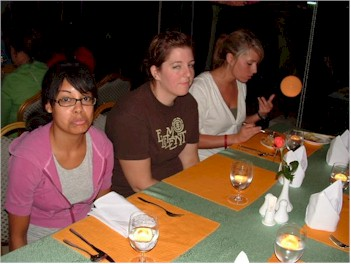
awake for the next 8 hours or so. That was hard!
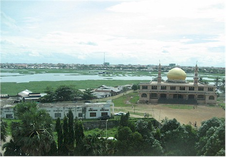
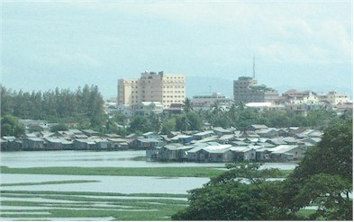

Eric is cut out completely.) We're happy because
after this we finally get to go to sleep!!!
Cambodia Index: 1 - 2 - 3 - 4 - 5 - 6 - 7 - 8 - 9 - 10 - 11 - 12